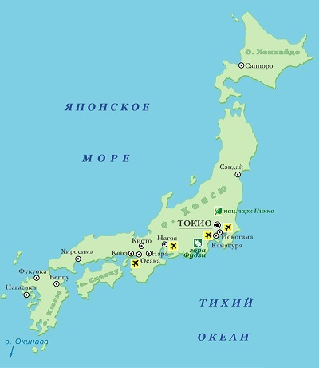
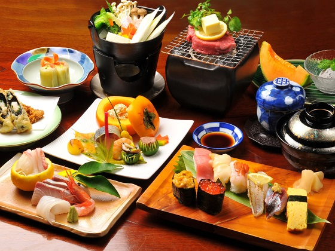
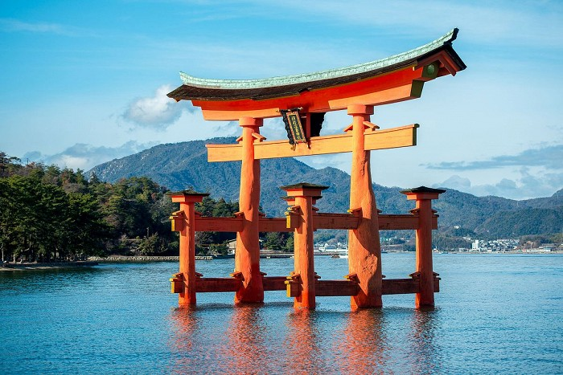
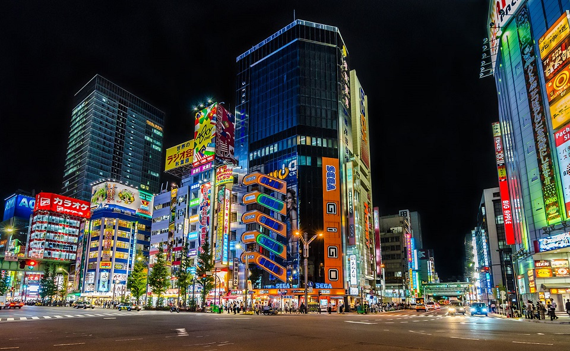
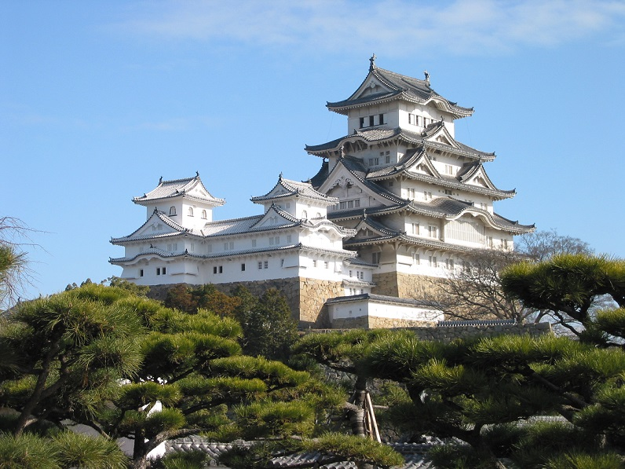
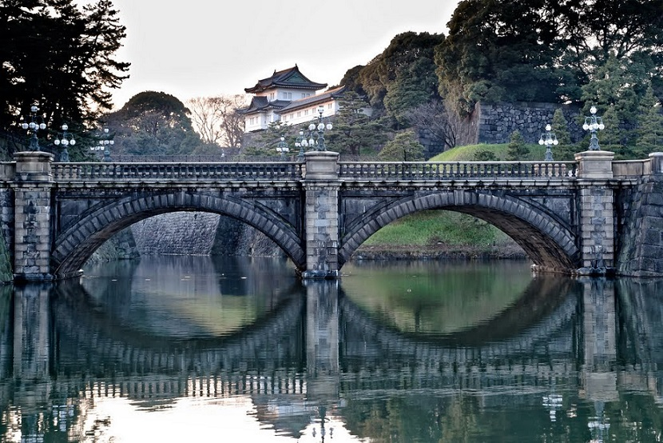
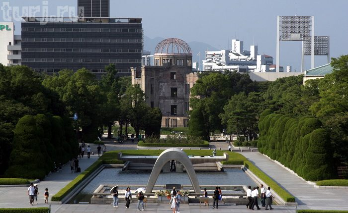

| На главную | Нидерланды | Германия | Северная Корея |
|---|
Государство общей площадью 377,4 тыс. кв.км, находится в Восточной Азии, расположено на 4 крупных островах (Кюсю, Сикоку, Хонсю и Хоккайдо), островах Рюкю и более чем 4 тыс. мелких островов. На севере омывается Охотским морем, на востоке – Тихим океаном, на юге – Тихим океаном и Восточно-Китайским морем, на западе – Корейским проливом и Японским морем.
Рельеф страны преимущественно гористый, достаточно сильно расчлененный. Многочисленны действующие и потухшие вулканы, в том числе высшая точка Японии — вулкан Фудзияма (3776 м). Береговая линия изрезана многочисленными бухтами и заливами. Часты землетрясения.

На севере страны климат умеренный, а на юге - субтропический и тропический муссонный. Лето достаточно жаркое по всей стране - от +30 С на севере до +38 С на юге. Летом выпадает максимальное количество осадков - от 700 мм. на севере, до 1200 - на юге, при этом влажность воздуха очень высока, часты тайфуны. Средняя температура зимой достаточно низкая - от -15 С на Хоккайдо, до - 5 на о. Хонсю и до +16 С на архипелаге Рюкю. При этом выпадает достаточно большое для столь южных широт количество снега.
Осадков на большей части страны выпадает 1700-2000 мм. в год, на юге страны - до 4000 мм. Лучшее время для посещения островов - весна (время цветения сакуры) и конец сентября - начало октября. В это время температура обычно не опускается ниже 17-20 С, а влажность воздуха несколько ниже (хотя весной часты холодные ветра с материка, а осенью - тайфуны).
Японская кухня - одна из самых оригинальных и своеобразных в мире. Японская пища очень проста, тепловая обработка минимальна, а максимальное внимание уделяется сохранению естественного вида и вкуса продукта. Часто все приготовление сводится к простому нарезанию продукта, без всякой обработки, смешивание в одном блюде большого количества ингредиентов также не в ходу.
Мяса в стране всегда потреблялось относительно немного, поэтому большинство блюд из него или заимствованы из других культур, либо долгое время считались "элитарными". Наиболее популярны своеобразные омлеты ("омрайс"), тушеное мясо с картофелем "нику-дзага", японский шашлык "якитори", мясо "мидзутаки", цыпленок по-японски, яичные полоски "тамаго", печень по-японски и др.
В качестве прохладительного напитка распространен молотый лед с фруктовым сиропом "кори". Любимейший напиток японцев - зеленый чай, потребление которого также сопровождается особой церемонией "тя-но-ю". В последнее время стал популярен и черный кофе. Из спиртных напитков традиционны рисовая водка "сакэ" и пиво, зачастую также из риса.
|  |
Один из самых узнаваемых символов Японии — стоящие в воде красные ворота святилища Ицукусима. Храм, возведенный приблизительно в 6 веке н. э., приобрел свой нынешний вид в 12 столетии, тогда и появились ритуальные врата-тории, обозначающие границу между мирами живых и мертвых. Их регулярно обновляют, последние сделали из камфорного дерева и установили в 1875 г.

Акихабара – район в центре Токио известный как «город электроники», в силу того что здесь расположено большое количество магазинов электротехники. С недавнего времени Акихабара стала местом паломничества отаку - верных фанатов аниме и манга культуры. Маленькие магазинчики и универмаги с аниме атрибутикой, журналами и многим другим, а также мейд-кафе теперь раскиданы по всему району наряду с центрами электроники.

Замок Химэдзи — яркий представитель национальной японской архитектуры средних веков. Находится цитадель в одноименном городе Химэдзи, на острове Хонсю. С японского название переводится как “замок Белой Цапли”, так как считается, что сооружение похоже на взлетающую белую птицу. Наряду с Мацумото, Химэдзи является одним из самых популярных замков Японии.
Химэдзи — это целый замковый комплекс, состоящий из 83 построек. Все они построены из дерева и камня. Данная местность примечательна еще и тем, что здесь произрастает сакура. Во время весеннего периода любования цветами, именуемого ханами, к комплексу Химэдзи съезжаются сотни тысяч туристов. Замок на фоне цветущих деревьев сакуры выглядит потрясающе — такое зрелище запомнится навсегда.

Расположенный в самом сердце Токио, Императорский дворец соседствует со многими правительственными учреждениями и популярными среди туристов кварталами города.
Когда-то столицей Японии был город Киото, поэтому императорская династия проживала там, пока правитель Мейдзи не решил переселиться в Токио, сделав его столицей. Однако история дворца началась еще в 15 веке, когда он был построен Ота Доканом в местечке под названием Эдо.

Одним из первых крупных общественных ансамблей послевоенной Японии стал Парк Мира в Хиросиме, задуманный и осуществленный как синтез национальных и современных пространственных и конструктивно-пластических идей.
Парк расположен на территории бывшего округа Накадзима, целиком уничтоженного в результате атомной бомбардировки японского города Хиросимы в 1945 году. На территории в 122 000 квадратных метров находятся Мемориальный музей Мира, множество памятников, ритуальный колокол и кенотаф.

Вверх